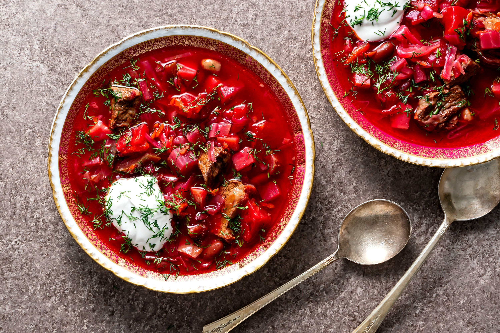

Einleitung
Borschtsch ist eine traditionelle ukrainische Suppe, die aus Rüben, Kartoffeln, Karotten, Zwiebeln und anderen Gemüsen zubereitet wird. Diese Suppe ist nicht nur lecker, sondern auch sehr gesund und nahrhaft. Probieren Sie es aus!
Zutaten
| 3 mittelgroße Rüben, geschält und gehackt |
| 1 große Zwiebel, gehackt |
| 3 Knoblauchzehen, gehackt |
| 4 Tassen Hühner- oder Gemüsebrühe |
| 2 Tassen Wasser |
| 1 große Kartoffel, geschält und gehackt |
| 2 Karotten, geschält und gehackt |
| 1 Rad Paprika, gehackt |
| 1 Esslöffel Tomatenmark |
| 1 Esslöffel Rotweinessig |
| 1 Lorbeerblatt |
| 1 Teelöffel getrockneter Dill |
| Salz und schwarzer Pfeffer nach Geschmack |
Dauer: 60 Minuten
Personen: 4-6

Schritte
- In einem großen Topf oder Schmortopf einen Esslöffel Öl bei mittlerer Hitze erhitzen. Fügen Sie die gehackten Zwiebeln hinzu und braten Sie sie an, bis sie weich und durchscheinend sind, etwa 5-7 Minuten.
- Fügen Sie den Knoblauch hinzu und kochen Sie ihn zusätzlich.
- Die gehackten Rüben in den Topf geben und umrühren. 5 Minuten kochen lassen und ab und zu kochen lassen.
- Mit der Hühner- oder Gemüsebrühe und dem Wasser aufgießen. Die gehackte Kartoffel hinzufügen, Karotten, rote Paprika, Tomatenmark, rot Weinessig, Lorbeerblatt und getrockneter Dill. Zum Kombinieren umrühren.
- Die Suppe zum Kochen bringen, dann reduzieren zu niedrig erhitzen und 30-40 köcheln lassen Minuten, oder bis das Gemüse weich ist. Das Lorbeerblatt entfernen und entsorgen.
- Verwenden Sie einen Pürierstab oder übertragen Sie die Suppe portionsweise in einen Mixer geben und pürieren bis es glatt ist.
- Die Suppe mit Salz und Schwarz abschmecken Pfeffer nach Geschmack.
- Heiß servieren, mit einem Klecks Sour garnieren Sahne und frischer Dill.